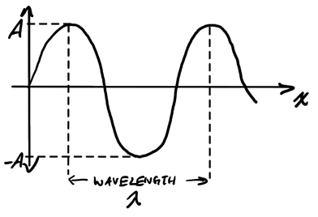
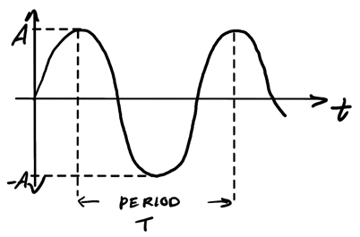
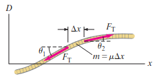
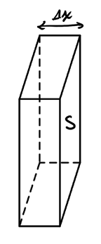
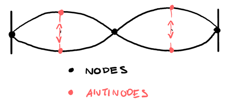
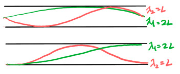
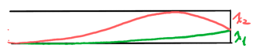

Mechanical Waves
Table of Contents
1. Waves
1.1. Types of Waves
Mechanical waves, so-called mechanical because they require a medium to propogate, and wave because of the disturbance tht travels through space over time, can be split into longitudinal waves and transverse waves.
Longitudinal waves are waves that oscillate along the direction of propogation. Sound waves are a type of longitudinal wave. Transverse waves, on the other hand, oscillate perpendicular to the direction of propogation. A wave on a rope is an example of transverse wave.
The medium is what allows a disturbance to travel through space over time. However, matter doesn't actually travel over long distance; energy does through a string of local oscillations.
1.2. Properties of Waves
If we graph a wave at a particular time \(t\) over \(x\):

The wavelength \(\lambda\) is the distance between two peaks or troughs. If we instead graph it over time:

The period \(T\) is the amount of time it takes (in seconds) for a wavelength to move past. Note that amplitude \(A\) is independent of \(\lambda\) and \(T\), but \(\lambda\) and \(T\) are related through:
\begin{align} \boxed{v = \frac{\lambda}{T} = \lambda f} \end{align}where \(v\) is the phase speed and \(f\) is the frequency. The frequency is the number of wavelengths that pass through a given point per second.
The phase speed is constant and completely dependent on the medium through which the wave is traveling. For a rope with tension \(F_T\) and linear mass density \(\mu\), the phase speed for waves of small amplitude on that rope is given by
\begin{align} v = \sqrt{\frac{F_T}{\mu}} \end{align}1.3. Mathematical Representation of a Wave
Consider the displacement of a wave at time \(t=0\). We can mathematically describe this wave shape as:
\begin{align} D(x) = A\sin\left(\frac{2\pi}{\lambda}x + \phi\right) \notag \end{align}Since the wave may not be a perfect sine curve going through the origin, we also add a phase shift constant \(\phi\). Suppose the wave is moving to the right with phase speed \(v\). After a time of \(t\), the distance the wave has traveled in the \(x\) direction is \(vt\), which means we can write the time-dependent version as:
\begin{align} D(x, t) = A\sin\left[\frac{2\pi}{\lambda}(x - vt) + \phi\right] \notag \end{align}Since \(v = \lambda f\) and period \(T = \frac{1}{f}\), we can say that \(v = \frac{\lambda}{T}\). Then, we can rewrite this equation as:
\begin{align} D(x, t) &= A\sin\left[\frac{2\pi}{\lambda}x - \frac{2\pi}{\lambda}\frac{\lambda}{T}t + \phi\right] \notag &= A\sin\left[\frac{2\pi}{\lambda}x - \frac{2\pi}{T}t + \phi\right] \notag \end{align}Let the wave number \(k = \frac{2\pi}{\lambda}\), and let the angular frequency \(\omega = \frac{2\pi}{T}\), so then the mathematical representation of a traveling wave is:
\begin{align} \boxed{D(x, t) = A\sin(kx \pm \omega t + \phi)} \end{align}where the \(kx+\omega t\) form moves in the \(-\hat{x}\) direction, and the \(kx - \omega t\) form moves in the \(+\hat{x}\) direction.
Additionally, since \(v = \lambda f\), \(\lambda = \frac{2\pi}{k}\), and \(\omega = 2\pi f\), we can also write the phase speed as:
\begin{align} \boxed{v = \frac{\omega}{k}} \end{align}1.4. Energy Transported by Waves
Waves transport energy through a medium by transferring vibrational energy from particle to particle. For a wave with amplitude \(A\) moving in simple harmonic motion, its energy is given by:
\begin{align} \boxed{E = \frac{1}{2}kA^2} \end{align}We can write \(k\) as \(k=4\pi^2mf^2\). Then, in terms of frequency \(f\) and amplitude \(A\), we have:
\begin{align} E = 2\pi^2mf^2A^2 \notag \end{align}From this equation we see that the energy transported by a wave is proportional to the square of the amplitude and to the square of the frequency. We can also find the average rate of energy transferred as the power \(P\):
\begin{align} \bar{P} = 2\pi^2\mu vf^2A^2 \end{align}2. The Wave Equation
Many types of waves satisfy a general equation that describes the motion of the wave. This equation, similar to Newtons's law of motion for particles, is called the wave equation. Consider a one-dimensional wave traveling on a stretched horizontal string:

We assume that the amplitude of the wave is small, which allows \(\theta_1\) and \(\theta_2\) to also be small. This is so that we can use the small angle approximation \(\sin\theta \approx \tan\theta\).
Applying Newton's Second Law along the y-axis gives:
\begin{align} F_T\sin\theta_2 - F_T\sin\theta_1 = \mu \Delta x \frac{\partial^2D}{\partial t^2} \notag \end{align}The partial derivative notation must be used since \(D\) is a function of both \(x\) and \(t\). Since \(\tan\theta\) is equal to the slope of the string at each point \(\frac{\partial D}{\partial x}\), by the small angle approximation we have \(\sin\theta \approx \tan\theta = \frac{\partial D}{\partial x} = s\). Then, our equation becomes:
\begin{align} F_T(s_2-s_1) &= \mu \Delta x \frac{\partial^2D}{\partial t^2} \notag \\ F_T \frac{\Delta s}{\Delta x} &= \mu \frac{\partial^2D}{\partial t^2} \notag \end{align}Taking the limit as \(\Delta x \to 0\), we get:
\begin{align} \lim_{\Delta x \to 0} F_T \frac{\Delta s}{\Delta x} &= F_T \frac{\partial s}{\partial x} \notag \\ &= F_T \frac{\partial}{\partial x} \frac{\partial D}{\partial x} \notag \\ &= F_T \frac{\partial^2 D}{\partial x^2} \notag \end{align}Plugging this back into Newton's Second Law, we have:
\begin{align} F_T \frac{\partial^2 D}{\partial x^2} &= \mu \frac{\partial^2D}{\partial t^2} \notag \end{align}Therefore, the wave equation for a wave on a rope becomes:
\begin{align} \frac{\partial^2 D}{\partial x^2} = \frac{\mu}{T} \frac{\partial^2D}{\partial t^2} \notag \end{align}By (2), we can generalize this for all waves. The 1D wave equation is:
\begin{align} \boxed{\frac{\partial^2 D}{\partial x^2} = \frac{1}{v^2} \frac{\partial^2D}{\partial t^2}} \end{align}3. Sound Waves
Sound waves are longitudinal waves that propogate through a medium, which can be represented as either a displacement of fluid molecules or a pressure variation. They have two main characteristics, loudness (which depends on intensity), and pitch (which depends on frequency, the higher the frequency the higher the pitch). The speed of a sound wave through a medium is determined by:
\begin{align} \boxed{v = \sqrt{\frac{B}{\rho}}} \end{align}where \(B\) is the bulk modulus and \(\rho\) is the density. From (3), we can mathematically represent the displacement as \(D(x,t) = A\sin(kx - \omega t)\). Then, the bulk modulus \(B\) can be found from:
\begin{align} \Delta P = -B\frac{\Delta V}{V} \end{align}where \(\Delta P\) is a change in pressure and \(\frac{\Delta V}{V}\) represents a fractional change in volume due to the change in pressure. If we take a infinitesimal slice of fluid with width \(\Delta x\) that is experiencing a displacement difference of \(\Delta D\):

We can represent the change in pressure as:
\begin{align} \Delta P &= -B\frac{S\Delta D}{S\Delta x} \notag \\ &= -B\frac{\partial D}{\partial x} \notag \\ &= -BAk\cos(kx - \omega t) \notag \end{align}The maximum pressure variation \(\Delta P_M\) occurs when cosine is at \(-1\), so:
\begin{align} \Delta P_M &= BAk \notag \end{align}Since \(v=\sqrt{\frac{B}{\rho}}\) and \(v = \frac{\omega}{k}\) from (4), we can simplify this to:
\begin{align} \Delta P_M = \rho vA2\pi f \end{align}3.1. Intensity and Loudness
Intensity is defined as the average power over area:
\begin{align} I &= \frac{\langle P\rangle}{S} \notag \\ &= \langle\frac{F}{S}v_M\rangle \notag \\ &= \langle\Delta Pv_M\rangle \notag \\ &= \langle\Delta P_M\cos(kx - \omega t)\frac{\partial D}{\partial t}\rangle \notag \\ &= \Delta P_MA\omega \langle\cos^2(kx - \omega t)\rangle \notag \\ &= \frac{\Delta P_M A\omega}{2} \notag \\ &= \frac{\rho vA^24\pi^2 f^2}{2} \notag \\ &= 2\pi^2f^2\rho vA^2 \end{align}Loudness, \(\beta\), is defined with the unit of decibels [dB] as:
\begin{align} \beta = 10\log\left(\frac{I}{I_0}\right) \end{align}where \(I_0\) is the threshold for hearing.
3.2. Interference in Space
When two sound waves overlap with one another, they produce interference:

There is constructive interference if both wave peaks/troughs align with each other, which produces the maximum sound level:
\begin{align} \delta = m\lambda, \: m \in \mathbb{N} \end{align}There is also destructive interference when the peak of one wave aligns with the trough of another, producing no sound:
\begin{align} \delta = \frac{(2m+1)\lambda}{2}, \: m \in \mathbb{N} \end{align}3.3. Beating
The interference of two slightly different frequencies result in a pulsating sound called beating. Consider the equations of two waves with two slightly different frequencies \(\omega_1\) and \(\omega_2\):
\begin{align} D_1(0, t) &= A\sin(\omega_1 t) \notag \\ D_2(0, t) &= A\sin(\omega_2 t) \notag \\ \end{align}The resultant of these two waves is:
\begin{align} D_{\text{resultant}} &= A(\sin\omega_1 t + \sin\omega_2 t) \notag \\ &= 2A\sin\left[\left(\frac{\omega_1+\omega_2}{2}\right)t\right]\cos\left[\left(\frac{\omega_1+\omega_2}{2}\right)t\right] \notag \end{align}The beat frequency is then the difference between the frequencies of the two waves:
\begin{align} \boxed{f_b = |f_1 - f_2|} \end{align}4. Standing Waves
If \(D_1\) and \(D_2\) are solutions to the wave equation, than any combination \(aD_1 + bD_2\) also satisfies the wave equation: this is known as the superposition principle. Conversely, for any complicated wave \(D\), by Fourier's Theorem you can decompose it into many simple harmonic waves.
If we send a signal along a rope and attach the other end to a wall, then there is reflection against the wall (without attenuation — amplitude stays the same). If \(D_1\) is the signal traveling along the rope and \(D_2\) is the reflection, then the net displacement is:
\begin{align} D_{\text{net}} &= D_1 + D_2 \notag \\ &= A\sin(kx - \omega t) + A\sin(kx + \omega t) \notag \\ &= A\left[\sin(kx-\omega t) + \sin(kx + \omega t)\right] \notag \\ &= 2A\sin(kx)\cos(\omega t) \end{align}We see that here, there is a separation between the space variable and time. This indicates that we have a non-traveling, or standing wave.
4.1. Fixed at Both Ends
If we have a rope that is fixed at both ends, then we have \(D_{\text{net}} = 0\) at both ends of the rope: \(x = 0\) and \(x = L\). Then, we will need to fulfill the condition that \(\sin(kL) = 0\), or \(kL = n\pi\) for \(n\) in the positive natural numbers. We know that \(k = \frac{2\pi}{\lambda}\), so substituting gives:
\begin{align} \boxed{L = n\frac{\lambda}{2}} \end{align}for all \(n\) in the positive natural numbers, limited by the length of the rope. Notice that for standing waves to occur, the length of the rope must be in multiples of half the wavelength:

We define the points with no net displacement to be the nodes, and the points of maximum net displacement to be the antinodes. Realize that for a rope that is fixed at both ends, the number of antinodes is equal to the number of half-wavelengths we have, which is equal to \(n\).
We call when \(n=1\) the fundamental mode, or the first harmonic, with \(n=2\) being the second harmonic and first overtone, and so on. With \(n\) antinodes, the wavelength is \(\lambda = \frac{2L}{n}\), and since \(v = \lambda f\), \(f = \frac{v}{\lambda}\), so the frequency is:
\begin{align} \boxed{f = \frac{nv}{2L}} \end{align}4.2. Free at One End
For a rope clamped at one end and free at the other end, from (8) we see that \(D_{\text{net}} = \pm 2A\) at the free end. Then, we must satisfy \(\sin(kL) = \pm 1\), which means that \(kL = \frac{(2n+1)\pi}{2}\). Substituting \(k\) gives:
\begin{align} \boxed{L = \frac{(2n + 1)\lambda}{4}} \end{align}Thus, for a rope free at one end, the length must be in odd integer multiples of quarter wavelengths.
4.3. Standing Waves in Air Columns
Sound instruments produce standing waves at various frequencies. For an air tube that is open at both ends (e.g. flute), there is minimum or maximum displacement at a tube end because the molecules can move more freely:

This is analoguous to the rope with two fixed ends, with \(\lambda_n = \frac{2L}{n}\).
The air tube closed at one end and open at the other (e.g. clarinet) has a minimum/maximum displacement at the open end, and zero displacement at the closed end:

This is similar to the rope with one fixed and one open end, with \(\lambda_n = \frac{4L}{2n+1}\).